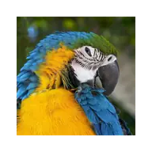

Marionetpin

Vervormt de laag als een marionet: zet er pinnen op, sleep of animeer de pinnen en het beeld volgt ze vloeiend.
Marionetpin buigt een laag met pinnen. Zet Pinnen toevoegen aan en tik op de laag waar hij moet buigen, tot 32 pinnen. Zet Pinnen toevoegen daarna uit en sleep een pin in het voorbeeld, of dubbeltik op de X- of Y-waarde in de lijst om een positie te typen. Het beeld onder een pin die je sleept, gaat mee. Pinnen die je niet verplaatst, houden het beeld op zijn plek. En een nieuwe pin op een laag die al gebogen is, laat het beeld zoals het is.
- Afname bepaalt hoe de buiging zich verspreidt: hogere waarden houden hem dicht bij de pinnen die je verplaatst, lagere waarden spreiden hem vloeiend over de laag.
- Tik op de naam van een pin om het Pintype te kiezen. Positie-pinnen verplaatsen het beeld en buigen het vloeiend mee. Buigen-pinnen hebben ook Rotatie en Schalen, waarmee ze het beeld eromheen draaien en vergroten. Stijf-pinnen houden hun deel van het beeld in vorm en kun je niet slepen.
- Driehoekdichtheid bepaalt hoe fijn het mesh is dat het beeld buigt, en Mesh-uitbreiding laat het mesh voorbij de randen van de laag reiken.
- Zwaaien laat de pinnen vanzelf heen en weer zwaaien: Zwaaisterkte, Zwaaisnelheid, een Zwaairichting (een Hoek of Willekeurig) en een Zwaai-seed. Zwaaipinnen laat alle pinnen zwaaien, of met Geselecteerd alleen de pinnen waarbij Deze pin laten zwaaien aanstaat.
- Wil je een pin animeren, tik dan op zijn naam in de lijst en gebruik de keyframeknop, net als bij elke andere instelling. Zie Keyframes en easing.
- Het pijltje naast een pin zet hem terug op de plek waar zijn deel van het beeld begon. Zo verdwijnt de buiging van die pin. De prullenbak verwijdert de pin en zijn keyframes.
- Toepassen op onderliggende lagen buigt de onderliggende lagen ook, alsof ze bij het beeld van deze laag horen.
- Zet pinnen op de delen die stil moeten blijven, zoals het lichaam als je een arm beweegt.
Instellingen
| Instelling | Type | Bereik | Standaard |
|---|---|---|---|
| Afname | Getal | 0.1 tot 4 | 1 |
| Driehoekdichtheid | Getal | 8 tot 48 | 24 |
| Mesh-uitbreiding | Getal | 0 px tot 500 px | 0 px |
| Zwaaien | Aan of uit | – | Uit |
| Zwaaisterkte | Getal | 0 px tot 500 px | 15 px |
| Zwaaisnelheid | Getal | 0 Hz tot 10 Hz | 1 Hz |
| Zwaairichting | Keuze | Hoek, Willekeurig | Hoek |
| Zwaaihoek | Hoek | -3600° tot 3600° | 0° |
| Zwaai-seed | Getal | 0 tot 1000 | 0 |
| Zwaaipinnen | Keuze | Alle, Geselecteerd | Alle |